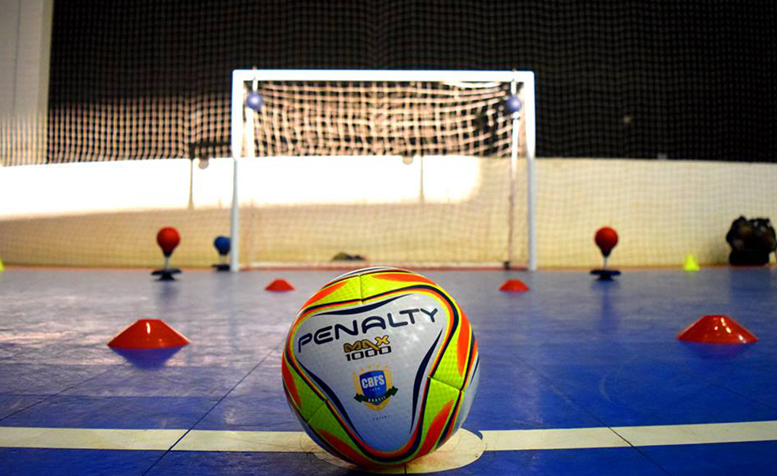
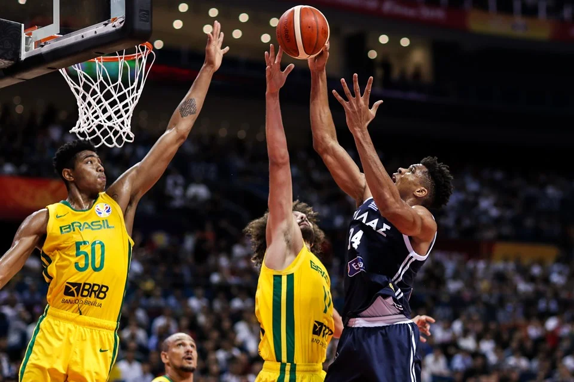
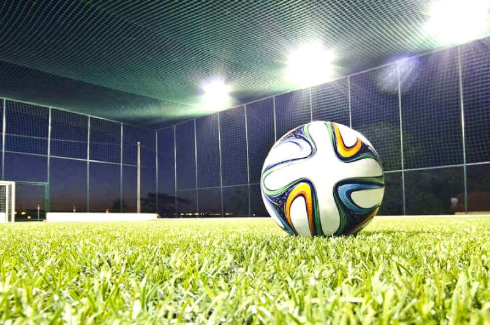
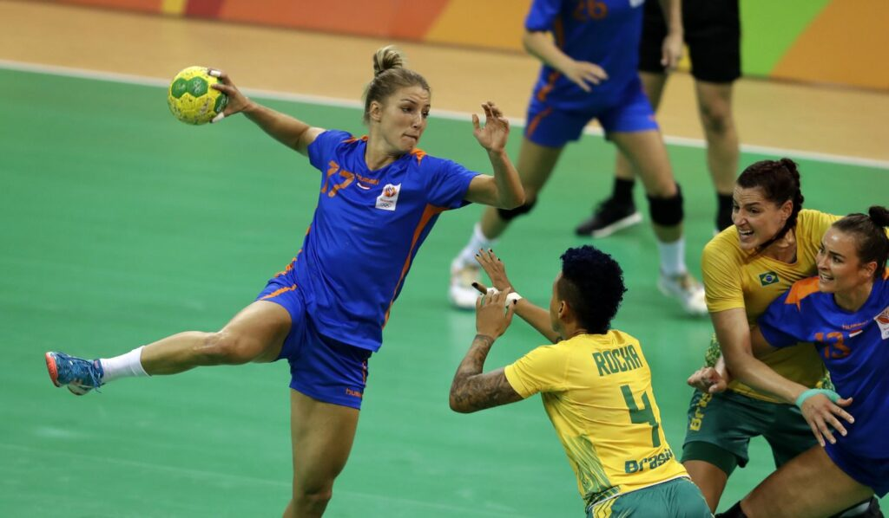

Esportes
Futsal

-
O futsal é uma vertente dinâmica do futebol, disputada em quadras menores e com equipes formadas por cinco jogadores. Criado na década de 1930, no Uruguai, rapidamente conquistou espaço no Brasil, onde se tornou uma paixão nacional. Com ritmo acelerado, jogadas técnicas e alto nível de habilidade, o futsal exige precisão e agilidade dos atletas.
A modalidade utiliza uma bola de tamanho reduzido e segue regras específicas que favorecem o jogo rápido e estratégico. Hoje, o futsal é praticado em todos os continentes e conta com competições internacionais organizadas pela FIFA, consolidando-se como um esporte global e vibrante.
- O futsal é uma vertente dinâmica do futebol, disputada em quadras menores e com equipes formadas por cinco jogadores. Criado na década de 1930, no Uruguai, rapidamente conquistou espaço no Brasil, onde se tornou uma paixão nacional. Com ritmo acelerado, jogadas técnicas e alto nível de habilidade, o futsal exige precisão e agilidade dos atletas. A modalidade utiliza uma bola de tamanho reduzido e segue regras específicas que favorecem o jogo rápido e estratégico. Hoje, o futsal é praticado em todos os continentes e conta com competições internacionais organizadas pela FIFA, consolidando-se como um esporte global e vibrante.
Basquete

- É um esporte coletivo jogado por duas equipes com cinco jogadores cada. O objetivo é marcar pontos ao lançar a bola na cesta do time adversário, que fica suspensa a 3,05 metros do chão. Criado em 1891 pelo professor canadense James Naismith, nos Estados Unidos, o basquete se tornou um dos esportes mais populares do mundo e faz parte dos Jogos Olímpicos desde 1936.
A modalidade exige agilidade, coordenação, estratégia e trabalho em equipe, sendo praticada tanto em ambientes escolares quanto em ligas profissionais. Com regras próprias e ritmo intenso, o basquete é um espetáculo de velocidade e precisão.
- É um esporte coletivo jogado por duas equipes com cinco jogadores cada. O objetivo é marcar pontos ao lançar a bola na cesta do time adversário, que fica suspensa a 3,05 metros do chão. Criado em 1891 pelo professor canadense James Naismith, nos Estados Unidos, o basquete se tornou um dos esportes mais populares do mundo e faz parte dos Jogos Olímpicos desde 1936. A modalidade exige agilidade, coordenação, estratégia e trabalho em equipe, sendo praticada tanto em ambientes escolares quanto em ligas profissionais. Com regras próprias e ritmo intenso, o basquete é um espetáculo de velocidade e precisão.
Society

- O futebol society, também conhecido como futebol 7 ou futebol suíço, é uma variação do futebol tradicional jogada em campos menores, geralmente com sete jogadores por equipe. Surgiu no Brasil por volta dos anos 1950 como uma alternativa mais acessível e dinâmica ao futebol de campo.
Com regras próprias — como tempo de jogo reduzido, ausência de impedimento e substituições ilimitadas — o futebol society é marcado por velocidade, técnica e interação constante entre os jogadores. É muito praticado em clubes, escolas e centros esportivos, sendo uma opção popular para quem busca lazer, saúde e competição em ambientes mais descontraídos.
- O futebol society, também conhecido como futebol 7 ou futebol suíço, é uma variação do futebol tradicional jogada em campos menores, geralmente com sete jogadores por equipe. Surgiu no Brasil por volta dos anos 1950 como uma alternativa mais acessível e dinâmica ao futebol de campo. Com regras próprias — como tempo de jogo reduzido, ausência de impedimento e substituições ilimitadas — o futebol society é marcado por velocidade, técnica e interação constante entre os jogadores. É muito praticado em clubes, escolas e centros esportivos, sendo uma opção popular para quem busca lazer, saúde e competição em ambientes mais descontraídos.
Vôlei
.jpg)
- O vôlei, ou voleibol, é um esporte coletivo jogado por duas equipes de seis jogadores em uma quadra dividida por uma rede. O objetivo é fazer a bola tocar o chão do lado adversário, usando apenas toques com as mãos e braços. Criado em 1895 por William G. Morgan nos Estados Unidos, o vôlei combina técnica, agilidade e trabalho em equipe.
Além da versão tradicional de quadra, existem variações como o vôlei de praia, jogado na areia com dois atletas por time, e o vôlei sentado, voltado para pessoas com deficiência. O esporte é muito popular no Brasil, com destaque internacional das seleções masculina e feminina em campeonatos mundiais e Jogos Olímpicos.
- O vôlei, ou voleibol, é um esporte coletivo jogado por duas equipes de seis jogadores em uma quadra dividida por uma rede. O objetivo é fazer a bola tocar o chão do lado adversário, usando apenas toques com as mãos e braços. Criado em 1895 por William G. Morgan nos Estados Unidos, o vôlei combina técnica, agilidade e trabalho em equipe. Além da versão tradicional de quadra, existem variações como o vôlei de praia, jogado na areia com dois atletas por time, e o vôlei sentado, voltado para pessoas com deficiência. O esporte é muito popular no Brasil, com destaque internacional das seleções masculina e feminina em campeonatos mundiais e Jogos Olímpicos.
Handebol

- O handebol é um esporte coletivo jogado por duas equipes com sete jogadores cada, incluindo o goleiro. O objetivo é marcar gols arremessando a bola com as mãos na baliza adversária. Criado na Europa no início do século XX, o nome vem do inglês handball — “hand” (mão) + “ball” (bola).
A partida tem dois tempos de 30 minutos, e o jogo é marcado por velocidade, estratégia e trabalho em equipe. Existem variações como o handebol de areia e o handebol adaptado, praticado por pessoas com deficiência. No Brasil, é muito presente nas escolas e tem ganhado destaque em competições internacionais.
- O handebol é um esporte coletivo jogado por duas equipes com sete jogadores cada, incluindo o goleiro. O objetivo é marcar gols arremessando a bola com as mãos na baliza adversária. Criado na Europa no início do século XX, o nome vem do inglês handball — “hand” (mão) + “ball” (bola). A partida tem dois tempos de 30 minutos, e o jogo é marcado por velocidade, estratégia e trabalho em equipe. Existem variações como o handebol de areia e o handebol adaptado, praticado por pessoas com deficiência. No Brasil, é muito presente nas escolas e tem ganhado destaque em competições internacionais.